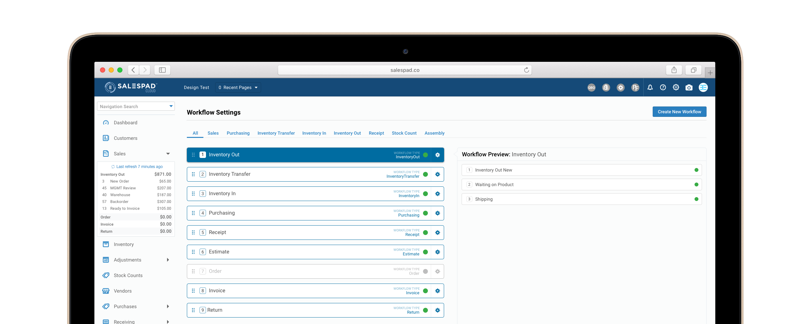
Picture this — you’re a manager for a growing succulent pot company and you’re looking to make your inventory shipment workflow more efficient. You just purchased the new SalesPad Cloud ERP platform and have started to setup the Workflow organization tool.
You get a few steps in and stop and think…
How can I recreate my current workflow here?
How can I use this to improve my workflow?
What am I even making with these different features??
This initial confusion was a common problem for new users and acted as a roadblock to understanding the Workflow tool and using it to its full potential.
Before I could address this problem, I needed to understand the product. The Workflow of SalesPad Cloud can be broken down into three main features: Batches, Rules and Actions.
Batches represent the steps in a Workflow. A piece of inventory’s progress in a shipment Workflow can be seen by which Batch it’s in. It is kind of like tracking a package!
Rules and Actions work together as a way to customize your Batches. Rules are customizable conditions that you can set and assign to each Batch. If the condition is met in the Batch, then a selected Action will occur.
To paint a picture, if you created a “Ready to Ship” Batch for your succulent pots, but you never want more than 30 in the Batch at a time, then you would create that Rule and assign the Action of sending an alert email once there are 30 pots in the Batch.
To find out more about why and where the Workflow process was confusing, I interviewed company leaders of product development and customer support, who frequently talk to customers about the product.
Here are the main points that I discovered:
It’s really important for warehouse managers to visualize their Workflow at a macro level so they can organize their operations. This visualization ability is rooted in the Workflow set-up process, as before our product, most managers would write out their Workflow on paper and it would be easy for them to see.
In order to make the transition from a paper Workflow to an enhanced digital one, our set-up process needed to match or improve upon the visualization ability that managers are used to.
Warehouse managers want to improve efficiency in their inventory management Workflow with SalesPad Cloud features.
However, since the Workflow tool setup was not achieving this macro-visualization ability, the managers did not have context for what they were creating and were often roadblocked from achieving maximum efficiency because of the resulting confusion.
To start my design process, I organized an initial brainstorm session with my manager.
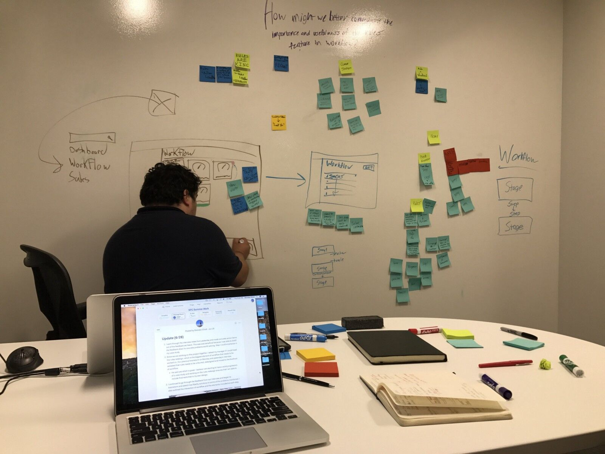After a few hours, we came up with three potential solutions.
I weighed the tradeoffs of a content strategy overhaul and tutorial improvements, but decided that they did not offer enough potential to solve the root of the problem.
Ultimately, I decided on our third option of redesigning the UI and visualization of Workflow settings with a focus on the visual disconnect between Batches, Rules and Actions in their settings pages.
I chose this direction because my research showed that people were confused because the settings design did not reflect a physical Workflow order. This is why our customer support specialists method of drawing the Workflow step-by-step was effective at helping our users understand what they were making.
The goal was to find a way to put that visualization method into our settings UI and close the disconnect between features. This solution best addressed the root of our problem and had a proven track record.
In the two above examples of the original Workflow settings design, Batches and Rules are separated into two pages and there is no mention of Rules on the list of Batches. This was a noticeable disconnect as it was extremely hard to see how Rules affected individual Batches without even seeing what Rules were in each Batch.
With this in mind, I explored ways that we could bridge this disconnect through bringing Rules context into the Batch Settings page.
The two examples of explorations focus on including the Rules in the Batches cell or combining the Batches and Rules settings pages, as shown respectively below. The purpose here was to create a mental model where Batches and Rules are connected.
I also experimented with full scale visualizations, like in the tool Jira, but it was turned down by our development team because of resource and time constraints.
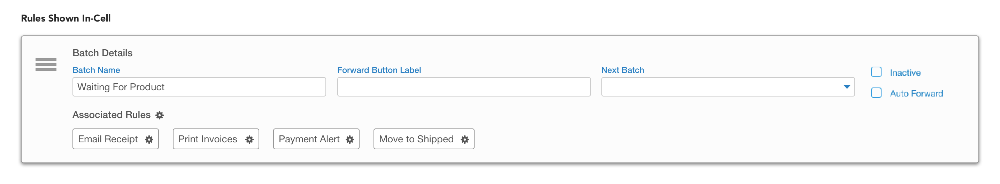 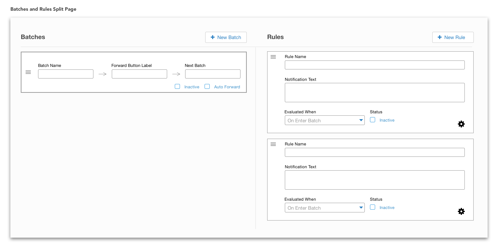Both of these had the benefit of improving context for the user, but there were tradeoffs. First, given the amount of input information in the Batch cells, it would potentially get too cluttered if numerous small Rules cells were put in it.
Second, the split screen settings threatened to be too complex to put in a single screen. I realized there was intention in separating them and the core functionality of setting up Rules should be in a different page to prevent further user confusion.
Considering these tradeoffs, I decided to take the best of both options and split the screen between Batches and Rules, but only show the list of Rules for each Batch, rather than including the full Rules Settings.
The final designs can be seen below.

This helped solve the disconnect between Batches and Rules as it showed what Rules were included in each Batch. As you can see in the highlighted screen below, just the Rules' names are shown to prevent cognitive overload. If a user wants more context, they can click the Rule and it will take them to the Rules Settings page.
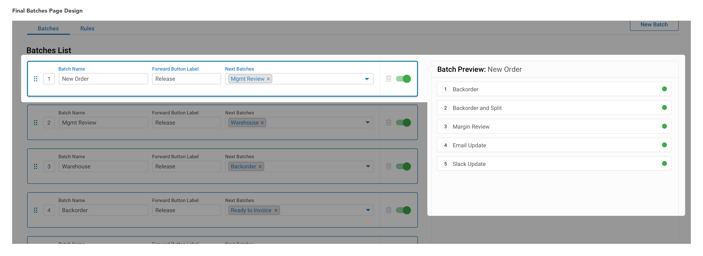With Batches shown in an ordered list and the attached Batch Rules shown when clicked, the visual of the Workflow was starting to form. However, I still had to tackle Rules, the users’ biggest complaint.
The Rules Settings page was the most confusing for users. As you can see below, the various settings inputs for Rules are broken into two sections, with some on the left and right.
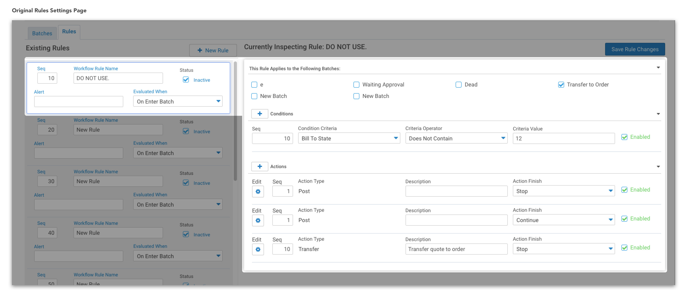Users often did not initially make the connection between the selected Rule on the left and extended settings on the right. Once they did they would edit the settings on the right assuming they had selected a specific Rule on the left, but ended up editing the wrong thing.
The mistakes caused by this disconnect had huge consequences, as one error could alter a whole Workflow, potentially costing a company lots of money and wasted time.
For this redesign, I took inspiration from my previous explorations and Batch page redesign. I used the same Rules list design from the Batch page to maintain consistency and moved all of the settings inputs to the right side.
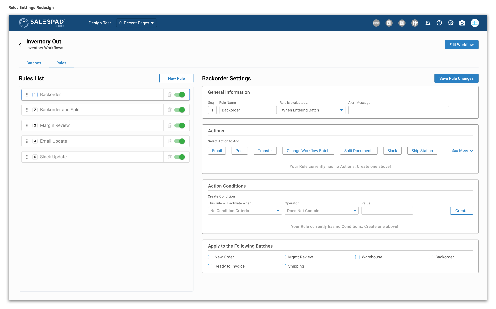The intention behind moving all of the settings inputs to the right was to have a central place for all changes made. These changes can be easily mapped to the simplified Rules list on the left, where it can be seen which Rule is selected.
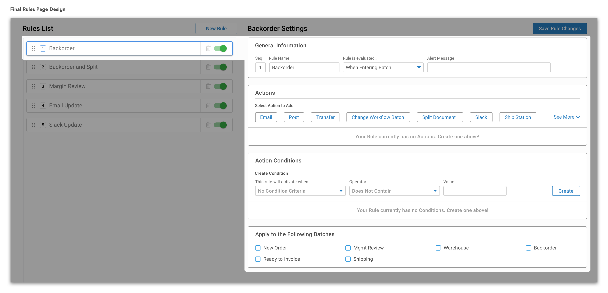This mapping improvement will decrease cognitive overload and improve context through visualization. It will also drastically reduce the the previous errors made from editing the wrong Rule.
By breaking up the sections of the Rules Settings input and touching up the visual design, I improved the hierarchy in the information offered to help users better see what they were editing.
The previous design (left) grouped the sections close together with titles smaller than other elements in the section. This made it hard to differentiate what sections made up the Rules settings. It is understandable that the users were often confused as to what they were editing.
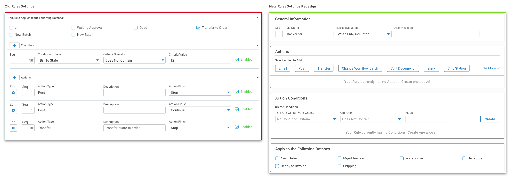 The new design (right) surrounds the four sections with borders and increases the size of the titles to improve the hierarchy and information architecture. This way the users can see what makes up a Rule and what they are editing.Additionally, I changed the order of the sections to reflect the hierarchy. After the Rule name, the most important part of Rules is the Action. In the original design, Actions were put at the end.
This change of order will help users see the flow of creating a Workflow through better showing what makes up a Rule.
As I mentioned in the last section, Action settings were previously put at the end of the Rules settings inputs.
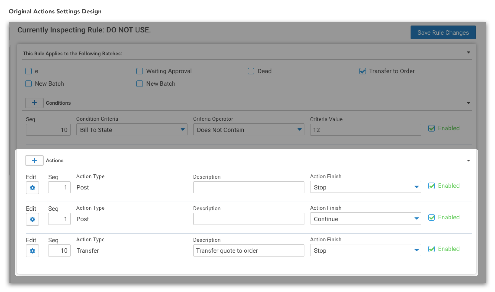However, the entry points to select and change an Action were buried even deeper, as you had to select the edit icon (far left) to make changes, which opened a toggle drawer. Since the edit icon was separated from the “Action Type”, it wasn’t clear that this edit button referred to Action Type.
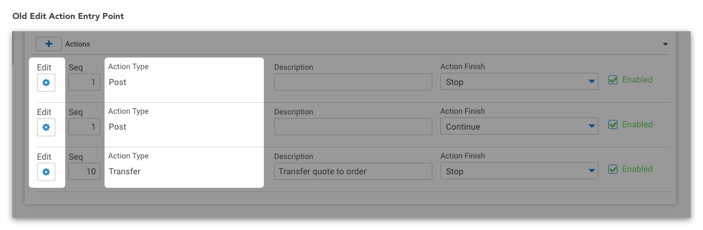This burial of Action customization in the depths of Settings was causing a lot of confusion for our users. It was another level of separation and disconnect where there should have been an easy connection between Actions and Rules, as one resides within the other.
To fix this final level of disconnect, we moved the Actions Settings section up in the Rules Settings order and brought the Action creation entry point out from the toggle drawer. Now, users will be able to see the available Actions they can add to a Rule and better see the context and relation to the flow.
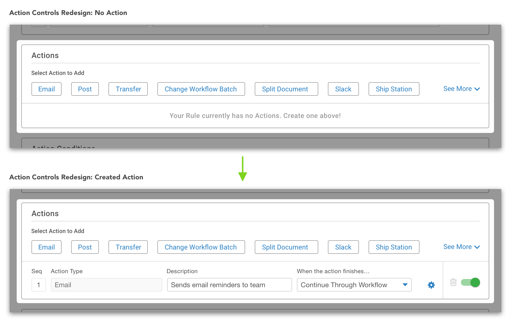Clicking the specific Action will still open the toggle menu because it is SalesPad’s standard and including data in the Action cell would be inconsistent because of the differing inputs for each Action.
However, being able to see the available Actions before the toggle step vastly improves the interaction flow and hierarchy of creating Actions.
Here is the Workflow settings redesign prototype that I used for testing with customer support specialists and presented at the end of my internship.
When I handed off the designs at the end of my internship in the summer of 2017, design and development were scheduled to continue. Unfortunately, I was not able to test with real users because of the constraints of my internship and the recent release of SalesPad Cloud.
However, I was able to present and test my redesign with the implementation and customer support specialists, as they were in charge of onboarding new users and interact with customers the most of anyone in the company.
I received very promising feedback, as most thought it would be much easier for users to pick up and understand, thus saving hours in implementation time.
In the summer before the last, I had the opportunity to work at a small startup. This transition to a more established company like SalesPad brought many new lessons.